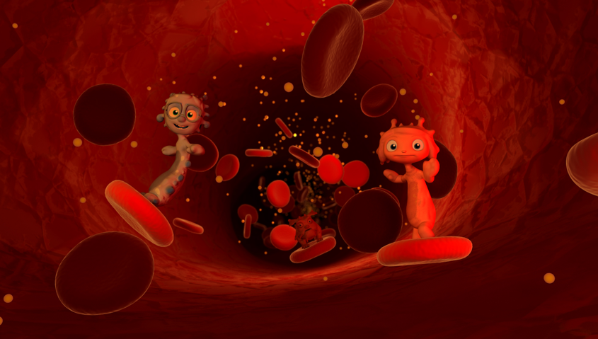
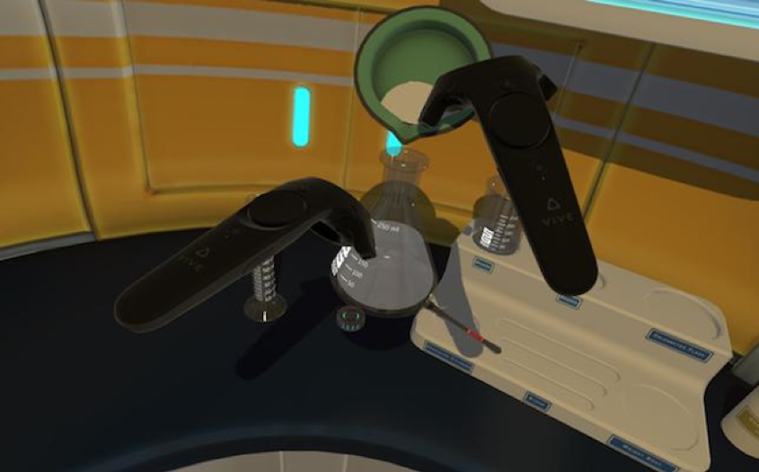
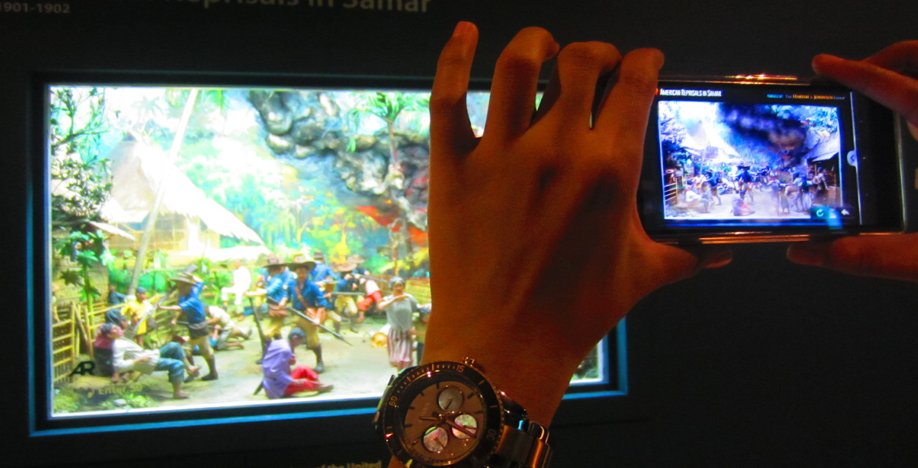
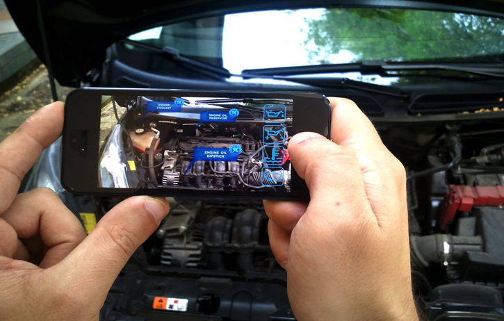

Augmented Reality en Virtual Reality zijn allebei concepten waarbij de echte wereld en de virtuele wereld samen in contact komen met elkaar. Bij augmented reality (AR) kan de gebruiker de echte wereld nog steeds zien. Hierbij worden hologrammen vermengd met de omgeving om zich heen. Virtuele objecten treeden dus de echt wereld binnen. Bij virtual reality (VR) is dit juist omgekeerd. Hierbij treedt de gebruiker de virtuele wereld binnen.
Voor dit onderwerp is de opdracht om uit een lijst met applicatiegebieden drie gebieden uit te kiezen en hierbij een VR of een AR concept te bedenken. Voor elk concept moet er beschreven worden hoe het werkt en wat je ermee wilt bereiken. Ik heb hierbij gekozen voor de gebieden education, museum en car.
Om de leerlingen een beter beeld te geven van de stof zullen er verschillende onderdelen uit verschillende vakken met behulp van een VR bril bestudeert kunnen worden. Zo zou er bij biologie het menselijk lichaam makkelijker bestudeerd kunnen worden door virtual het lichaam te kunnen ontleden en zelfs betreden. Je kan als het ware het lichaam in gaan en daar alles van binnen bekijken. Er kan zelf ingesteld worden hoe groot je bent, even groot als de organen, weefsel, cellen of zelfs DNA. Het lichaam zal normaal te werk gaan, dus de verschillende processen binnen het lichaam zullen ook bekeken kunnen worden. Dit zal niet alleen toegepast worden bij biologie, maar ook bij scheikunde. Hierbij zullen er verschillende proeven uitgevoerd kunnen worden, dit is dan ook veel veiliger en op deze manier kunnen de leerlingen zelf gaan experimenteren met verschillende stoffen en er zo meer over leren.
 Bij elk schilderij of kunstwerk in een museum, is er de mogelijkheid om het tot leven te laten komen. Om meer te weten te komen over het verhaal, richt je je smartphone op de schilderij, die dan vervolgens het verhaal af laat spelen, je ziet dan alle figuren tot leven komen en samen interacteren. Een kunstwerk kan ook tot leven komen en vertelt vervolgens wat over zichzelf en degene die hem gemaakt heeft. Op deze manier wordt de ervaring aantrekkelijker gemaakt en wordt het verhaal ook duidelijker doordat er een beeld bij gecreëerd wordt. Dit zorgt er ook voor dat kinderen bij een museum niet gelijk gaan denken aan saai, maar dat ze er zich juist op gaan verheugen.
Wanneer er iets mis is met de auto en je niks van auto’s snapt, pak je je smartphone erbij, open je een app en richt je het op de auto. De app laat weten op welke plek er precies iets kapot of los is. Als er bijvoorbeeld iets mis is met de motor dan wordt er als eerst aangegeven dat het daarom gaat, je loopt er vervolgens naartoe en richt de telefoon op de motor. De app scant het en geeft aan waar het precies aan ligt. Hierbij wordt er dan vertelt wat er mis is en waarom dit zo is en wat er vervolgens aan gedaan kan worden. Dit is goedkoper en gaat veel sneller. Wanneer het niet anders kan laat de app het weten en wordt er automatische gebeld naar bijvoorbeeld anwb.
Het is een app die gemaakt is voor professionele architectures, waar de gebruikers hun plannen kunnen scannen en vertalen naar een virtual reality of augmented reality om zo hun plannen beter te kunnen bestuderen. De software bestaat uit een groot aantal beeldschermen met VR- en AR-kop. Wanneer de plannen vertaald worden naar VR, kan de gebruiker letterlijk door zijn plannen heen lopen en alles ook van binnen bekijken. Op deze manier kan de architect een gevoel van schaal krijgen en om te begrijpen hoe mensen in het gebouw zich zouden verplaatsen. Bij het vertalen van de plannen naar AR maakt de app een direct 3D-model op een tafel of ander oppervlak.
Ik vond dit een heel erg interessant en handig project omdat het zoveel verschil kan maken in toekomstige gebouwen die gebouwd worden. Doordat architecten zelf kunnen gaan ervaren hoe het er van binnen uit zal zien, kunnen ze er extra dingen aan toevoegen, die de ervaring beter zullen maken. Ook voorkomt dit fouten die ervoor kunnen zorgen dat het ontwerp helemaal opnieuw gemaakt kan worden.
http://www.realitytechnologies.com/designToen ik bij de eerste hoorcollege erachter kwam wat de onderwerpen waren, was dit onderwerp het meest waar ik naar uit keek. Dit kwam vooral omdat niet zo bekend was met de andere drie onderwerpen en omdat ik erg geïnteresseerd ben in VR en ik altijd al zo een VR bril wilde proberen. Ik dacht bij VR vooral aan games en meer niet, maar na de hoorcollege werd het duidelijk dat er andere soorten zijn. Ik denk ook dat hier in de toekomst veel meer mee gedaan zal worden. Het zal dan niet alleen bekend staan om de virtuele gamewereld waar over nagedacht wordt wanneer er gepraat wordt over VR, maar ook voor heel veel andere situaties. Zo zou het goed toegepast kunnen worden in verschillende studies, zoals in de zorg. Op deze manier zijn de mensen voorbereid en weten ze beter hoe ze in bijvoorbeeld een noodgeval moeten handelen, doordat ze het eerder hebben meegemaakt.